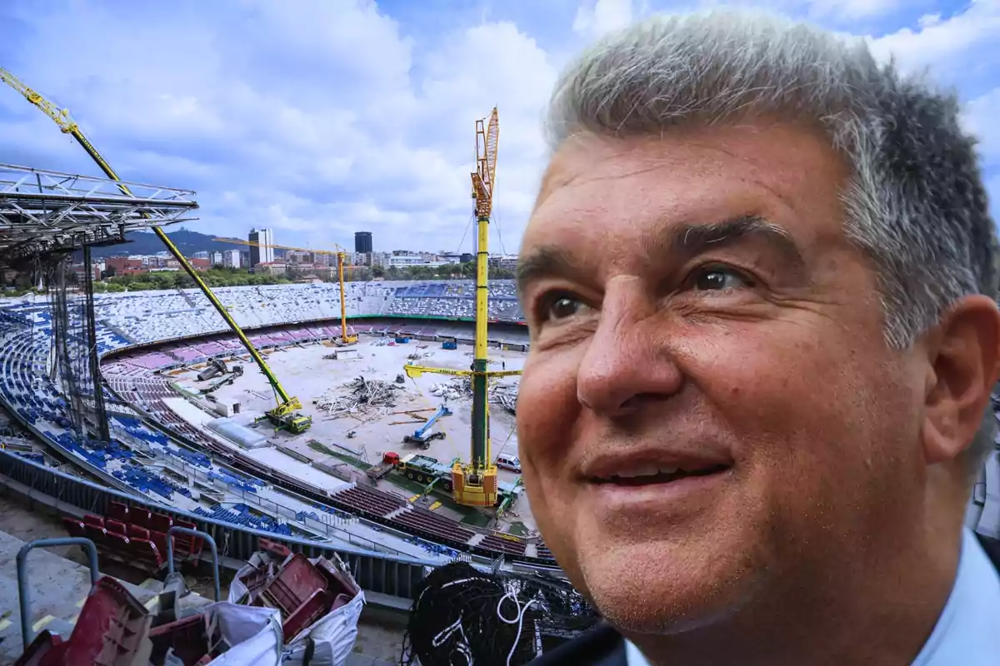

FUTUROS PROYECTOS
Página Incial
Curiosidades
Maxima Rivalidad
Redes Sociales
FUTUROS PROYECTOS:
Spotify Camp Nou:
El Camp Nou a dia de hoy está siendo remodelado para pasar de
99.000 espectadores a 105.000 espectadores
con el nombre del nuevo patrocinador
"Spotify Camp Nou".
INGRESOS DEL CLUB:
Los ultimos años han sido complicados economicamente para el Club, aunque el presidente actual
Joan Laporta
ha confirmado que para la temporada
25/26
el FC Barcelona ya habra soltado la suficiente masa salarial para que el club recupere esa monetización multimillonaria.
Patrocinadores Oficiales
Marca de Ropa Oficial
Colaboraciones

© copyright FC Barcelona.com